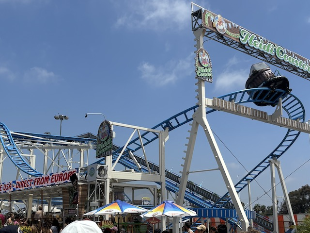
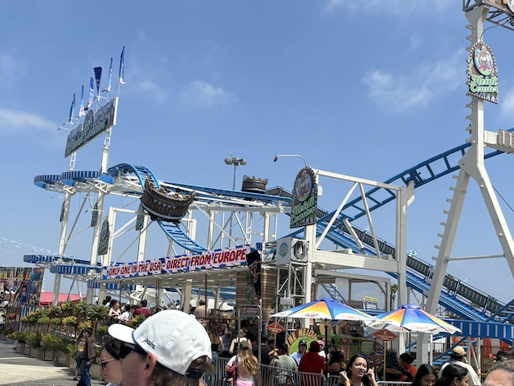
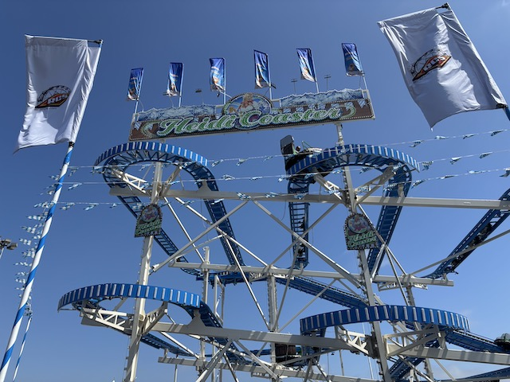
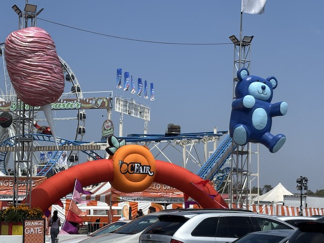

| |
Heidi Review

We're here at the O.C Fair, where we're going to be reviewing Heidi. Oh boy. Another Spinning Mouse. Except this one is different and has a few extra features that make it more unique than your average Spinning Mouse. Also, fun fact. This ride came straight from the European Fair Circuit, but made its way over to California in 2024. So I'm happy about that since I was able to ride it. We get into our cars and away we go. We roll through a turn and head up the lifthill. And WHOA!!! This lifthill has a kick. It's surprisingly fast. In a way, this sort of reminds me of the Maverick lifthill. It catches you off guard. But it slows you down at the top so you go through the course at normal speed. Aww. This ride would be much better if you kept the speed from the hyper-fast lifthill. We then head around a small turn, and the ride has begun. And another difference between this and your average Spinning Mouse. This spins the entire time. And it spins decently. So these top switchbacks are pretty damn fun. After the switchbacks, you head into a small drop and into a banked turnaround. This is easily the most striking difference between Heidi and your average Spinning Mouse. I honestly really like this. It helps with the spinning and just feels smoother and flows better with the ride. Plus coming out of that is the biggest drop of the ride. WEE!!!! Yeah. This is a much needed improvement. We then head into some double up thing which sadly, but not suprisingly, has no airtime. We then head around another turn and head into the second set of switchbacks. And since we're already spinning, we just go straight into it. And this one spins pretty damn well. Not the best, but still above average. After a couple switchbacks, we head through one last turn, and then we head into a small drop. And since we're already spinning pretty fast and going pretty fast, this provides some nice fun moments. Then you head through one last turn and head into the brake run. Heidi is a FANTASTIC spinning mouse. Not only does it spin really well, but the changes they made to this version really improve it, like the banked turn, the full course spinning, and even the Maverick lifthill helps. If you're a fan of Spinning Mice, or anything spinning related I'd recommend riding it. This thing is actually worth tickets, especially if there aren't any crazy flat rides at the fair like Zipper or Tango.
7/10
Location: American Fairs
Opened: ???
Built by: Reverchon
Last Ridden: August 14, 2025
Heidi Photos



Home
|